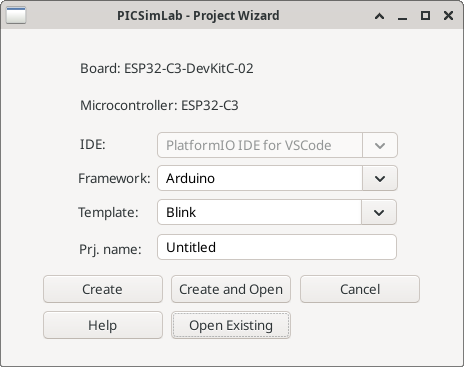

3.3 Project Wizard Window

The "PICSimLab - Project Wizard" window is an interface for creating a new code project in PICSimLab. Here’s how each option works:
- Board: Displays the name of the selected board.
- Microcontroller: Displays the name of the microcontroller selected for the chosen board.
- IDE: Specifies the integrated development environment (IDE) to be used for the project to be created. The options vary depending on the chosen board and microcontroller. The available options are "PlatformIO IDE for VSCode" and "MPLABX IDE".
- Framework: Specifies the framework to be used according to the chosen board.
- Template: Specifies the code template to be loaded according to the chosen framework.
- Project Name: Specifies the name of your project.
- Button Create: Creates a new project with the selected settings.
- Button Create and Open: Creates a new project and opens the selected IDE.
- Button Cancel: Cancels the creation of the project and closes the window.
- Button Help: Opens this PICSimLab documentation about the ProjectWizard.
- Button Open Existing: Opens an existing project and associates it as the active project.